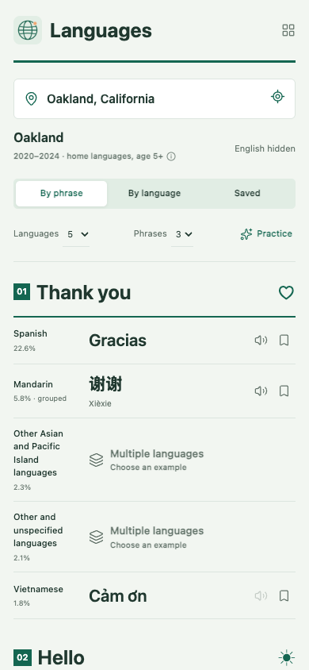
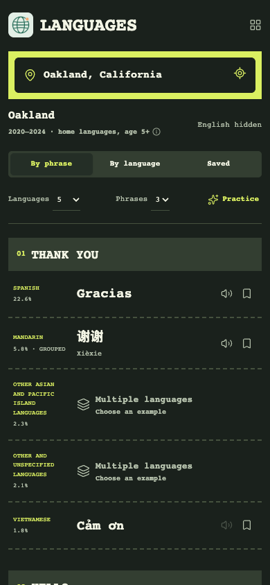
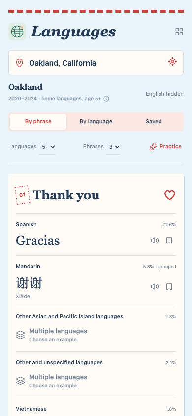
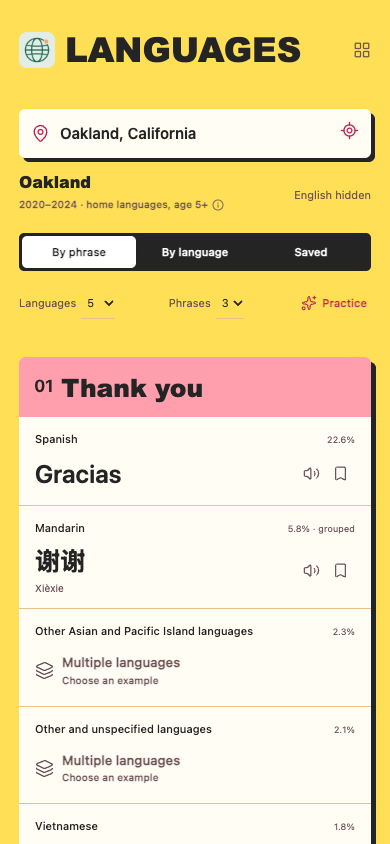
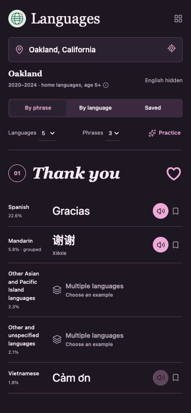
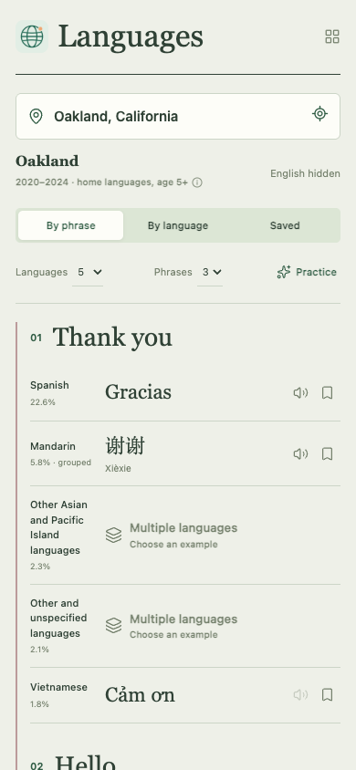
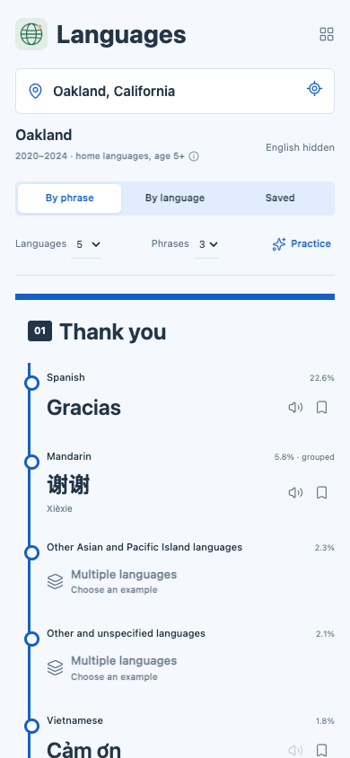
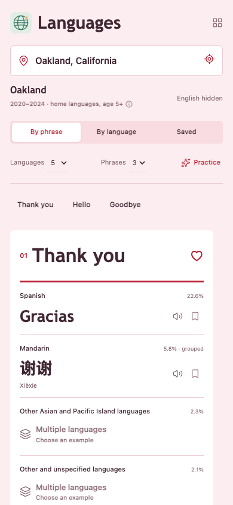
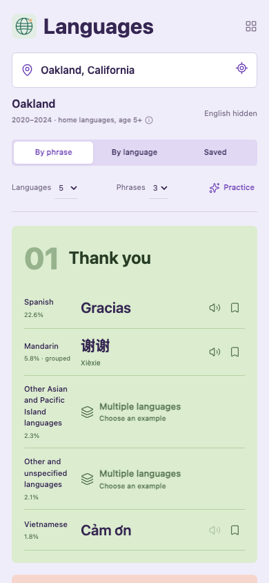
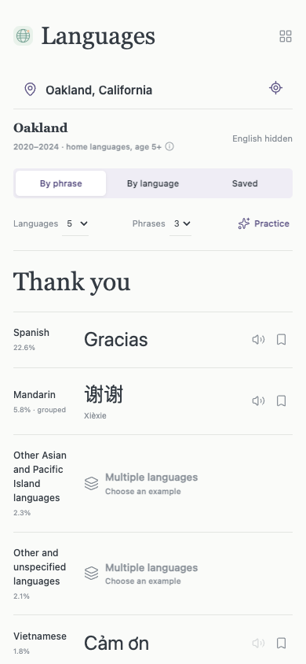

Languages
Ten different directions. Pick your favorite.

01
Pocket Atlas
Quiet, crisp, field-ready

02
Departures
A little airport energy

03
Post Office
Small words, long distances

04
Say It!
Big color, tiny conversations

05
Night Radio
Tune into another language

06
Field Journal
A page from your travels

07
Metro Lines
Your next connection

08
Flash Club
One phrase at a time

09
Color Blocks
A patchwork of voices

10
Air
Just the words